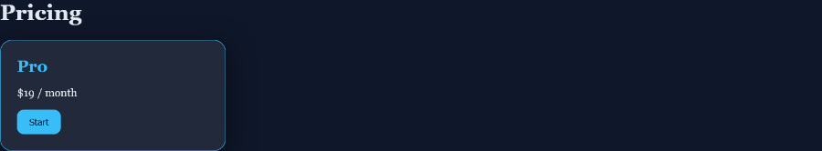

Stop describing "the button under the header, no, the other one". Click the element on your running app, say what should change, and your coding agent gets the exact element, selector and position. It replies right on the note.
Free · Windows 10 and 11 · any browser · runs entirely on your machine
Hand-poured candles in small batches. Ships in recyclable glass.
Shop the collection 1<a class="buy"> "Shop the collection"Words and screenshots lose the details. Treymark sends your agent the thing itself, then keeps the conversation on the element until it looks right.
Press Alt+A on your localhost page. Click an element or drag a box over an area.
Type what should change. The note carries the page, CSS selector, element text and position.
Your agent claims the note, makes the change and replies. Not quite right? Reply on the note and it goes back.
Every note and its thread across your projects. Reply, reopen or mark done without leaving the app.
MCP server for Claude Code, Codex and Cursor, plus a CLI for any agent with a shell. One-click copy setup.
Teaches your agent the loop: claim the note, find the code from the selector, change it, reply or ask you.
Add one script tag during development, or use the Firefox add-on. Either way your project's code stays untouched.
Every finished change saved as Markdown with before and after screenshots, ready for Obsidian. Your agent reads it to follow your taste.
A polish checklist skill for visual changes, plus vetted design skills from Anthropic and the community.
On React, Vue and Svelte dev builds each note carries the source file and line the element came from. In VS Code or Cursor, open notes are marked right in the code.
Recent console errors and failed requests ride along with the note, traced back to the line you wrote, so your agent can fix what is broken. You can remove them before sending.
Clip any element on any site: a screenshot, its colors, fonts and spacing, with tags. Browse them in the app or in Obsidian, and send one to your agent as "make mine look like this".
One button picks your project, installs the skills, connects Claude Code and adds the editor panel. No commands to copy.
Pick any folder, or an Obsidian vault. Every finished change and every style you clip is saved as a Markdown note with tags, links and screenshots. Your agent reads it to follow your taste, and you can search it like any other note.

border-radius: 18px; background-color: rgba(255, 255, 255, 0.08); box-shadow: 0 10px 40px rgba(0, 0, 0, 0.5);
An illustration of a Treymark notes folder in an Obsidian-style layout, built from a real clip. Obsidian is a free Markdown app from a different company; Treymark works with any Markdown folder.
Your page, the local server, your agent and the desktop app. Click a part to see what it does, or press Flows to watch a note travel from click to fix.
Treymark has no accounts, no cloud and no telemetry. It is a local tool that talks only to your browser and your agent.
The server listens on 127.0.0.1 and refuses requests addressed to any other host.
Only pages served from localhost can leave notes. Other websites are rejected.
Your agent signs in with a random per-project token. Pages cannot pretend to be the agent.
Notes live in a .treymark folder in your project. Read the privacy policy.
Free for Windows. Set up in two minutes.
Not code signed yet: if Windows shows "Windows protected your PC", click More info, then Run anyway.